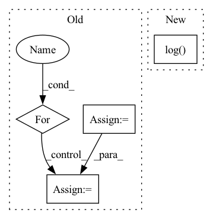

Pattern ID :19748
Before Change
return inp
inp = inp.reshape(ctx.dims.batch, -1, ctx.dims.spatial_mixing_kernel, ctx.dims.features)
inp = inp.transpose(0, 3, 1, 2)
shape = inp.shape
transposed_shape = list(shape)
transposed_shape[3], transposed_shape[2] = transposed_shape[2], transposed_shape[3]
inp = jnp.einsum("bfrs,sz,sz->bfrz", inp, weights[0], mask)
for wgt in weights[1:]:
inp = activate(ctx, inp)
inp = inp.reshape(*transposed_shape)
inp = jnp.einsum("bfsr,sz,sz->bfrz", inp, wgt, mask)
for _ in range(len(weights) - 1):
inp = inp.transpose(0, 1, 3, 2)
inp = inp.reshape(*shape)
return inp.transpose(0, 2, 3, 1).reshape(original_shape)
After Change
def mix(ctx: Context, inp: jnp.ndarray) -> jnp.ndarray:
original_shape = inp.shape
weight_shape = [ctx.dims.spatial_mixing_kernel] * 2
max_dims = math.ceil(math.log( ctx.dims.sequence, ctx.dims.spatial_mixing_kernel) )
mask = jnp.triu(jnp.ones(weight_shape, dtype=ctx.model.computation_dtype)) if ctx.model.autoregressive else 1
weights = [get_param(ctx, f"mix_{i}", weight_shape, std=1, scale=ctx.dims.spatial_mixing_kernel ** -0.5)
for i in range(max_dims)]In pattern: SUPERPATTERN
Frequency: 3
Non-data size: 4
Instances Fragment ID: 64460375
Project Name: homebrewnlp/homebrewnlp-jax
Commit Name: e3894fce349563809e673ef1a497a476f9bd8d34
Time: 2022-09-01
Author: 39779310+ClashLuke@users.noreply.github.com
File Name: src/model/mixer.py
M Class Name: AnonimousClass
N Class Name: AnonimousClass
M Method Name: mix(2)
N Method Name: mix(2)
M Parent Class:
N Parent Class:
M File Name: src/model/mixer.py
N File Name: src/model/mixer.py
M Start Line: 12
M End Line: 34
N Start Line: 14
N End Line: 32
Before Change
train_loss = train_loss + l1_loss
for duration_loss in duration_losses:
if not torch.isnan(duration_loss):
train_loss = train_loss + duration_loss
for pitch_loss in pitch_losses:
if not torch.isnan(pitch_loss):
train_loss = train_loss + pitch_loss
for energy_loss in energy_losses:
if not torch.isnan(energy_loss):
train_loss = train_loss + energy_loss
style_embedding_function.train()
style_embedding_of_predicted, out_list_predicted = style_embedding_function(After Change
if gan_step % 3 == 0:
loss = loss + pitch_generator_loss + energy_generator_loss + duration_generator_loss
if use_wandb:
wandb.log( {
"pitch_critic_loss" : pitch_generator_loss.item(),
"energy_critic_loss" : energy_generator_loss.item(),
"duration_critic_loss": duration_generator_loss.item(),
})
if use_wandb:
wandb.log({
"pitch_critic_loss" : pitch_critic_loss.item(), Fragment ID: 64460391
Project Name: digitalphonetics/ims-toucan
Commit Name: 02f21cbeb2b32337a50e146a3ae74b323baeaf35
Time: 2023-03-02
Author: lux.florian@gmail.com
File Name: TrainingInterfaces/Text_to_Spectrogram/ToucanTTS/toucantts_train_loop.py
M Class Name: AnonimousClass
N Class Name: AnonimousClass
M Method Name: train_loop(15)
N Method Name: train_loop(15)
M Parent Class:
N Parent Class:
M File Name: TrainingInterfaces/Text_to_Spectrogram/ToucanTTS/toucantts_train_loop.py
N File Name: TrainingInterfaces/Text_to_Spectrogram/ToucanTTS/toucantts_train_loop.py
M Start Line: 120
M End Line: 288
N Start Line: 79
N End Line: 272
Before Change
self.conv1 = nn.Sequential(nn.ReflectionPad2d(1), nn.Conv2d(in_channels, num_init_features, 3), nn.ReLU())
basic_block_layer = []
for _ in range(n_basic_block):
basic_block_layer += [ResidualInResidualDenseBlock(num_init_features, growth_rate)]
self.basic_block = nn.Sequential(*basic_block_layer)
After Change
upscale_factor (int): Image magnification factor. (Default: 4).
super(Generator, self).__init__()
self.upsample_block_num = int(math.log( upscale_factor, 2) )
// First layer
self.conv1 = nn.Conv2d(3, 64, kernel_size=3, stride=1, padding=0, bias=False) Fragment ID: 64460400
Project Name: lornatang/esrgan-pytorch
Commit Name: 8ef58f0f8458d618a99fffa07433927c9b9ef70f
Time: 2020-10-12
Author: liuchangyu1111@gmail.com
File Name: esrgan_pytorch/model.py
M Class Name: Generator
N Class Name: Generator
M Method Name: __init__(2)
N Method Name: __init__(7)
M Parent Class: nn.Module
N Parent Class: nn.Module
M File Name: esrgan_pytorch/model.py
N File Name: esrgan_pytorch/model.py
M Start Line: 99
M End Line: 125
N Start Line: 181
N End Line: 210